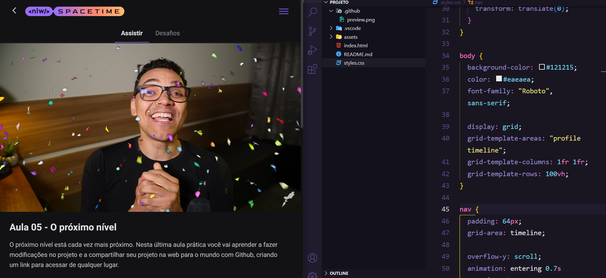

15 de Maio de 2023
Next Level Week

Participei do evento NLW Spacetime, da Rocketseat, a fim de construir
um projeto que aprimorasse meus conhecimentos e desenvolvesse novos
acerca das tecnologias utilizadas, e o resultado foi muito acima do
esperado. A aula técnica foi bem proveitosa, utilizando propriedades e
funcionalidades, bem como orientações, muito produtivas para outros
trabalhos ainda. O destaque especial fica para as aulas
comportamentais, do educador Mayk Brito, que transformaram a forma de
pensar, abordando soft skills, como a base de uma mentalidade forte
que entende momentos difíceis de falta de informação e persiste
rigidamente em busca de soluções e como o grupo muda a sua realidade
com as relações interpessoais de troca de conhecimento, experiência e
trabalho para o crescimento mútuo primordial.